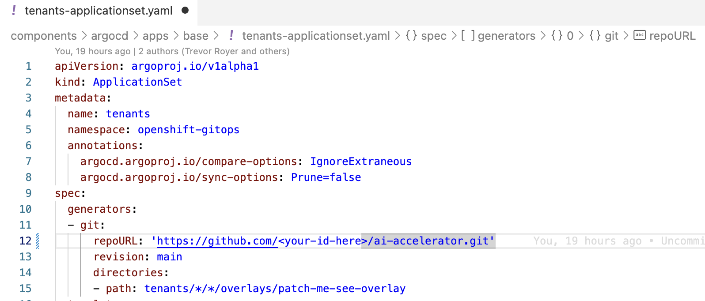
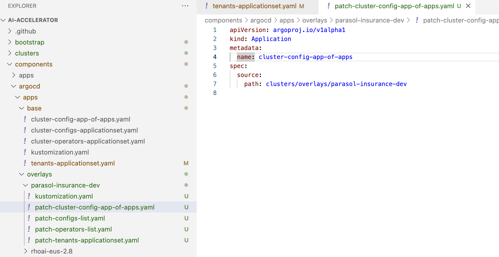
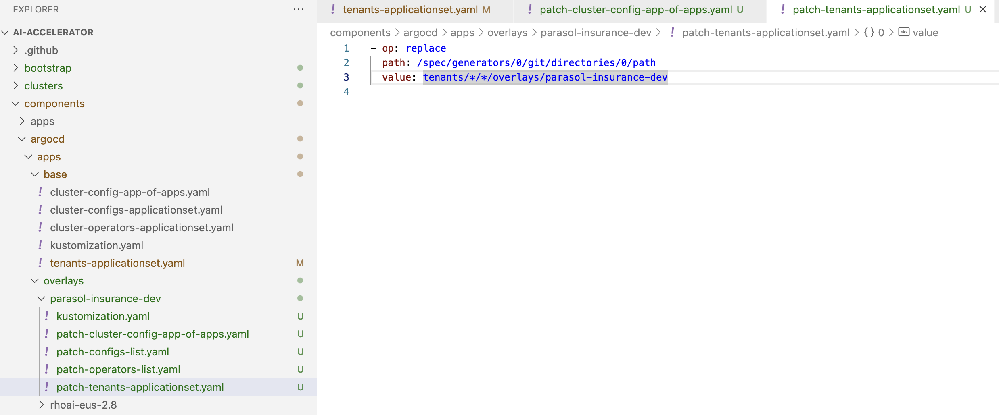
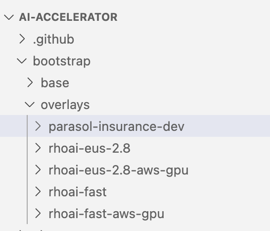
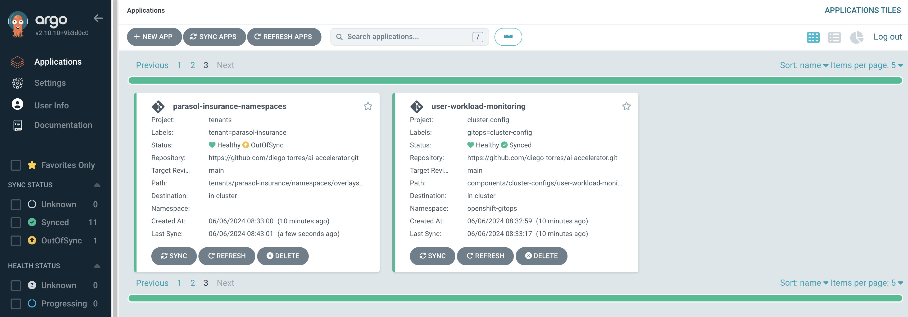
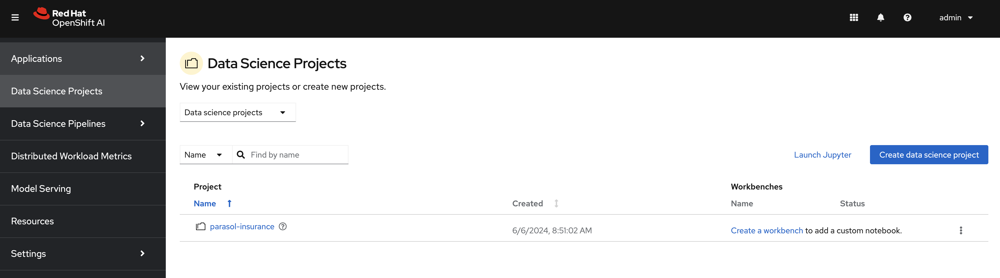

Environment Install and Setup: DEV and PROD Cluster
Parasol-insurance-dev cluster
Follow the following steps to complete the install and setup:
-
After the cluster is running and ready, log in as the admin
-
Copy the login token as shown in the image. Paste it in the terminal and run it. This should log you into the cluster through the terminal.
|
If you have certificate errors to login to the cluster, remember to use |
Setting up ai-accelerator project for Dev cluster
Instructions to fork ai-accelerator
-
Log into your git account and fork the following repository:
https://github.com/redhat-ai-services/ai-accelerator.git
-
Once forked, clone the repository to your local machine.
git clone https://github.com/{Git_ID}/ai-accelerator.git
-
Navigate to the cloned folder with the command:
cd ai-accelerator/
The ai-accelerator project uses Kustomize and GitOps/ArgoCD to deploy our project. It uses the bootstrap.sh script to deploy GitOps on the cluster. After GitOps is installed onto the cluster, it will then apply an overlay.
The overlay determines which folder/versions to apply to the cluster. This allows you to reuse components and files across multiple instances with different setups.
In our case, we want to set up a parasol-insurance-dev overlay.
-
Open the the redhat-ai-services/ai-accelerator fork that was cloned earlier in your code editor.
-
Change the git
repoUrlatcomponents/argocd/apps/base/tenants-applicationset.yamlto your forked repository URL. -
Next lets create a new overlay named
parasol-insurance-dev. Copycomponents/argocd/apps/overlays/rhoai-stable-2.19and paste it ascomponents/argocd/apps/overlays/parasol-insurance-dev. -
Change the
line 7of thepatch-cluster-config-app-of-apps.yamlfile topath: clusters/overlays/parasol-insurance-dev. -
Change the
line 3of thepatch-tenants-applicationset.yamlfile tovalue: tenants/*/*/overlays/parasol-insurance-dev. -
Next, create a new folder under the
bootstrap/overlaysfolder namedparasol-insurance-dev. -
In the
bootstrap/overlays/parasol-insurance-devfolder, create a new file namedkustomization.yamladd the below to the file.kustomization.yamlapiVersion: kustomize.config.k8s.io/v1beta1 kind: Kustomization resources: - ../../base - ../../../clusters/overlays/parasol-insurance-devAs you can see, the Kustomization resource from above is referencing the clusters/overlays/parasol-insurance-devfolder. Let’s create that folder -
Create a new folder named
parasol-insurance-devin theclusters/overlaysfolder. -
In the
clusters/overlays/parasol-insurance-devfolder, create a new file namedkustomization.yamladd the below content to the file:kustomization.yamlapiVersion: kustomize.config.k8s.io/v1beta1 kind: Kustomization namespace: openshift-gitops resources: - ../../base - ../../../components/argocd/apps/overlays/parasol-insurance-dev patches: # set the repo and branch for applications - path: patch-application-repo-revision.yaml target: group: argoproj.io kind: Application replacements: - source: kind: Application fieldPath: spec.source.repoURL targets: - select: kind: ApplicationSet fieldPaths: - spec.template.spec.source.repoURL - select: kind: ApplicationSet name: tenants fieldPaths: - spec.generators.*.git.repoURL - source: kind: Application fieldPath: spec.source.targetRevision targets: - select: kind: ApplicationSet fieldPaths: - spec.template.spec.source.targetRevision - select: kind: ApplicationSet name: tenants fieldPaths: - spec.generators.*.git.revision -
In the
clusters/overlays/parasol-insurance-devfolder, create a new file namedpatch-applicationset-manual-sync.yamladd the below content to the file:patch-applicationset-manual-sync.yaml- op: remove path: /spec/template/spec/syncPolicy -
In the
clusters/overlays/parasol-insurance-dev, create a new file namedpatch-application-manual-sync.yamladd the below content to the file:patch-application-manual-sync.yaml- op: remove path: /spec/syncPolicy -
In the
clusters/overlays/parasol-insurance-devfolder, create a new file namedpatch-application-repo-revision.yamladd the below content to the file. Replace the repoURL with your fork URL.patch-application-repo-revision.yaml- op: replace path: /spec/source/repoURL value: 'https://github.com/{GIT_ID}/ai-accelerator.git' - op: replace path: /spec/source/targetRevision value: mainReplace
GIT_IDwith your GitHub ID. -
In the
tenantsfolder, create a new folder namedparasol-insurance. Here is where we’ll be adding our new resources. -
In the
tenants/parasol-insurancefolder, create a folder namednamespaces -
In the
tenants/parasol-insurance/namespacesfolder, create thebaseandoverlaysfolders.Remember to add the baseandoverlaysfiles and folders. Make sure you have theparasol-insurance-devoverlay in theoverlaysfolder for Argo to pick up what it needs for the parasol-insurance-dev environment. -
In the
tenants/parasol-insurance/namespaces/basefolder, create a new file namedkustomization.yamladd the below content to the file:kustomization.yamlapiVersion: kustomize.config.k8s.io/v1beta1 kind: Kustomization resources: - parasol-insurance.yaml -
In the
tenants/parasol-insurance/namespaces/basefolder, create a new file namedparasol-insurance.yamladd the below content to the file:parasol-insurance.yamlapiVersion: v1 kind: Namespace metadata: name: parasol-insurance labels: opendatahub.io/dashboard: "true" kubernetes.io/metadata.name: parasol-insurance modelmesh-enabled: "true" -
In the
tenants/parasol-insurance/namespaces/overlaysfolder, create a new folder namedparasol-insurance-dev. -
In the
tenants/parasol-insurance/namespaces/overlays/parasol-insurance-devfolder, create a new file namedkustomization.yamladd the below content to the file:kustomization.yamlapiVersion: kustomize.config.k8s.io/v1beta1 kind: Kustomization resources: - ../../baseThe
opendatahub.io/dashboard: "true"label is used to identify the namespace as a RHOAI data science project.Our first component for the parasol-insurance tenant is the namespace.
This namespace is defined to be created in the
parasol-insurance-devenvironment as per theparasol-insurance-devoverlay. -
Push the changes to your forked repository.
push_changesgit add . git commit -m "Add parasol-insurance-dev overlay" git push origin main -
Make sure you are logged into the Dev cluster and run the bootstrap script by running the bootstrap.sh script.
./bootstrap.sh ... 1. parasol-insurance-dev 5. rhoai-fast-aws-gpu 2. rhoai-eus-2.16-aws-gpu 6. rhoai-stable-2.19-aws-gpu 3. rhoai-eus-2.16 7. rhoai-stable-2.19 4. rhoai-fast 8. rhoai-stable-2.19For parasol-insurance-dev environments type the number 1 and press Enter.
-
After the script is done, you can check the ArgoCD console to see the applications deployed. It will install RHOAI and relevent operators.
Notice that the
parasol-insurance-namespacesapplication was also deployed. -
Navigate to RHOAI, and validate that there is a data science project created with the name parasol-insurance.

|
To check your work please refer to This Dev Branch |
Parasol-insurance-prod cluster
The steps to set up the parasol-insurance-prod cluster are the same as parasol-insurance-dev, except change dev to prod in the kustomization files and folders.
Make the changes for prod in your forked repository and use it to set up the prod cluster.
When running the bootstrap script, select bootstrap/overlays/parasol-insurance-prod
|
To check your work please refer to This Prod Branch |